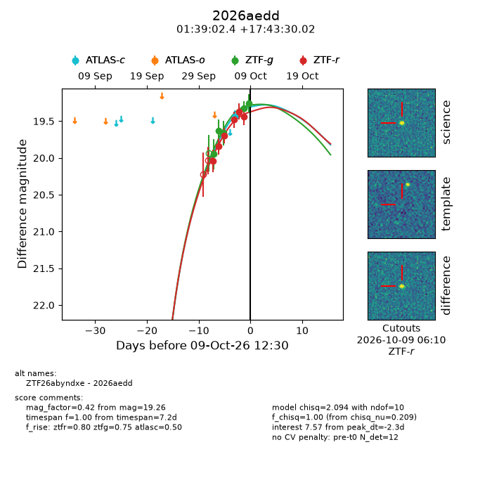
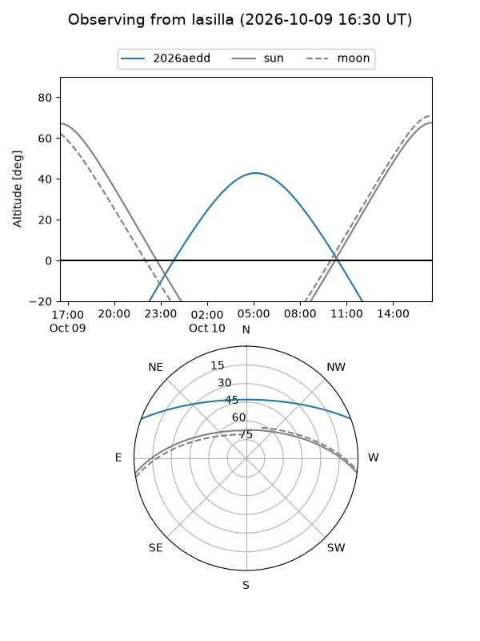
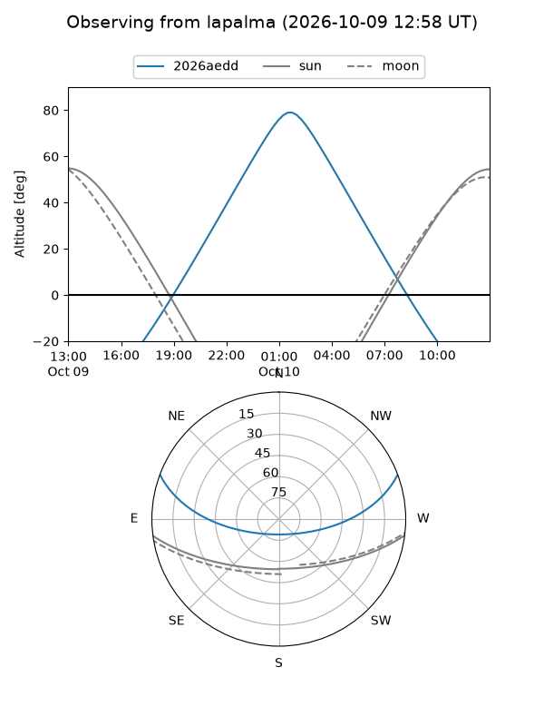
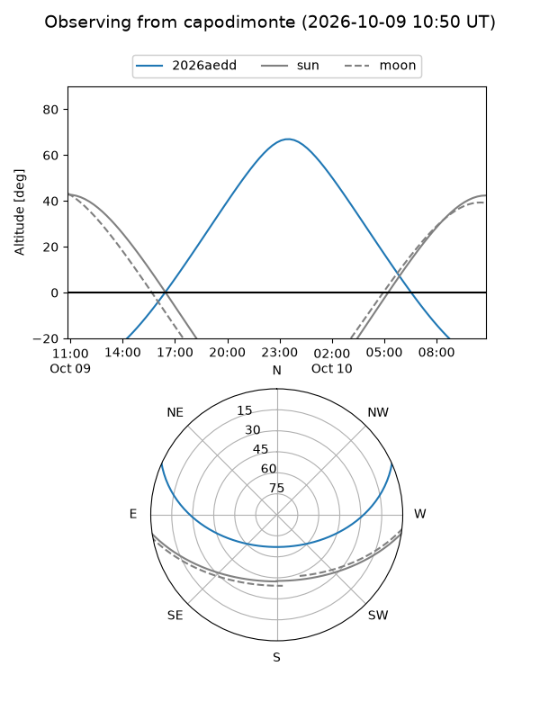
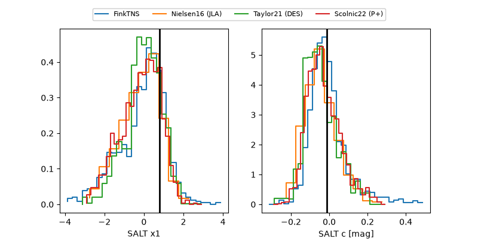

2026aedd
Target 2026aedd at 2026-10-09 12:32
Aliases and brokers:
FINK-ZTF: ztf.fink-portal.org/ZTF26abyndxe
Lasair-ZTF: lasair-ztf.lsst.ac.uk/objects/ZTF26abyndxe
ALeRCE-ZTF: alerce.online/object/ZTF26abyndxe
YSE-PZ: ziggy.ucolick.org/yse/transient_detail/2026aedd
TNS name: wis-tns.org/object/2026aedd
Direct TNS query: direct search
alt names
ZTF26abyndxe (ztf,fink_ztf)
2026aedd (tns,yse)
Coordinates:
equatorial (ra, dec) = 24.7600,+17.72500
equatorial (HMS+DMS) = 01:39:02.39,+17:43:30.02
galactic (l, b) = (138.6928,-43.68517)
Flags:
peak dt: -2.3
Photometry:
last atlasc=19.44, ztfg=19.26, ztfr=19.44
1 atlasc, 5 ztfg, 6 ztfr detections
Lightcurve

Visibility



Additional plots
